── Attaching core tidyverse packages ──────────────────────── tidyverse 2.0.0 ──
✔ dplyr 1.1.4 ✔ readr 2.1.5
✔ forcats 1.0.0 ✔ stringr 1.5.1
✔ ggplot2 3.5.1 ✔ tibble 3.2.1
✔ lubridate 1.9.3 ✔ tidyr 1.3.1
✔ purrr 1.0.2
── Conflicts ────────────────────────────────────────── tidyverse_conflicts() ──
✖ dplyr::filter() masks stats::filter()
✖ dplyr::lag() masks stats::lag()
ℹ Use the conflicted package (<http://conflicted.r-lib.org/>) to force all conflicts to become errors
library(knitr)library(ggtree)
ggtree v3.12.0 For help: https://yulab-smu.top/treedata-book/
If you use the ggtree package suite in published research, please cite
the appropriate paper(s):
Guangchuang Yu, David Smith, Huachen Zhu, Yi Guan, Tommy Tsan-Yuk Lam.
ggtree: an R package for visualization and annotation of phylogenetic
trees with their covariates and other associated data. Methods in
Ecology and Evolution. 2017, 8(1):28-36. doi:10.1111/2041-210X.12628
S Xu, Z Dai, P Guo, X Fu, S Liu, L Zhou, W Tang, T Feng, M Chen, L
Zhan, T Wu, E Hu, Y Jiang, X Bo, G Yu. ggtreeExtra: Compact
visualization of richly annotated phylogenetic data. Molecular Biology
and Evolution. 2021, 38(9):4039-4042. doi: 10.1093/molbev/msab166
Guangchuang Yu. Data Integration, Manipulation and Visualization of
Phylogenetic Trees (1st edition). Chapman and Hall/CRC. 2022,
doi:10.1201/9781003279242
Attaching package: 'ggtree'
The following object is masked from 'package:tidyr':
expand
library(TDbook) #A Companion Package for the Book "Data Integration, Manipulation and Visualization of Phylogenetic Trees" by Guangchuang Yu (2022, ISBN:9781032233574).library(ggimage)library(rphylopic)
You are using rphylopic v.1.4.0. Please remember to credit PhyloPic contributors (hint: `get_attribution()`) and cite rphylopic in your work (hint: `citation("rphylopic")`).
Attaching package: 'rphylopic'
The following object is masked from 'package:ggimage':
geom_phylopic
library(treeio)
treeio v1.28.0 For help: https://yulab-smu.top/treedata-book/
If you use the ggtree package suite in published research, please cite
the appropriate paper(s):
LG Wang, TTY Lam, S Xu, Z Dai, L Zhou, T Feng, P Guo, CW Dunn, BR
Jones, T Bradley, H Zhu, Y Guan, Y Jiang, G Yu. treeio: an R package
for phylogenetic tree input and output with richly annotated and
associated data. Molecular Biology and Evolution. 2020, 37(2):599-603.
doi: 10.1093/molbev/msz240
Guangchuang Yu. Using ggtree to visualize data on tree-like structures.
Current Protocols in Bioinformatics. 2020, 69:e96. doi:10.1002/cpbi.96
Guangchuang Yu, Tommy Tsan-Yuk Lam, Huachen Zhu, Yi Guan. Two methods
for mapping and visualizing associated data on phylogeny using ggtree.
Molecular Biology and Evolution. 2018, 35(12):3041-3043.
doi:10.1093/molbev/msy194
library(tidytree)
If you use the ggtree package suite in published research, please cite
the appropriate paper(s):
Shuangbin Xu, Lin Li, Xiao Luo, Meijun Chen, Wenli Tang, Li Zhan, Zehan
Dai, Tommy T. Lam, Yi Guan, Guangchuang Yu. Ggtree: A serialized data
object for visualization of a phylogenetic tree and annotation data.
iMeta 2022, 1(4):e56. doi:10.1002/imt2.56
Guangchuang Yu, David Smith, Huachen Zhu, Yi Guan, Tommy Tsan-Yuk Lam.
ggtree: an R package for visualization and annotation of phylogenetic
trees with their covariates and other associated data. Methods in
Ecology and Evolution. 2017, 8(1):28-36. doi:10.1111/2041-210X.12628
Attaching package: 'tidytree'
The following object is masked from 'package:treeio':
getNodeNum
The following object is masked from 'package:stats':
filter
library(ape)
Attaching package: 'ape'
The following objects are masked from 'package:tidytree':
drop.tip, keep.tip
The following object is masked from 'package:treeio':
drop.tip
The following object is masked from 'package:ggtree':
rotate
The following object is masked from 'package:dplyr':
where
library(TreeTools)
Attaching package: 'TreeTools'
The following object is masked from 'package:tidytree':
MRCA
The following object is masked from 'package:treeio':
MRCA
The following object is masked from 'package:ggtree':
MRCA
library(phytools)
Loading required package: maps
Attaching package: 'maps'
The following object is masked from 'package:purrr':
map
Attaching package: 'phytools'
The following object is masked from 'package:TreeTools':
as.multiPhylo
The following object is masked from 'package:treeio':
read.newick
library(ggnewscale)library(ggtreeExtra)
ggtreeExtra v1.14.0 For help: https://yulab-smu.top/treedata-book/
If you use the ggtree package suite in published research, please cite
the appropriate paper(s):
S Xu, Z Dai, P Guo, X Fu, S Liu, L Zhou, W Tang, T Feng, M Chen, L
Zhan, T Wu, E Hu, Y Jiang, X Bo, G Yu. ggtreeExtra: Compact
visualization of richly annotated phylogenetic data. Molecular Biology
and Evolution. 2021, 38(9):4039-4042. doi: 10.1093/molbev/msab166
library(ggstar)library(DT)library(plotly)
Attaching package: 'plotly'
The following object is masked from 'package:ggplot2':
last_plot
The following object is masked from 'package:stats':
filter
The following object is masked from 'package:graphics':
layout
NEON_MAGs <-read_csv("data/NEON/GOLD_Study_ID_Gs0161344_NEON_2024_4_21.csv") %>%# remove columns that are not needed for data analysisselect(-c(`GOLD Study ID`, `Bin Methods`, `Created By`, `Date Added`, `Bin Lineage`)) %>%# create a new column with the Assembly Typemutate("Assembly Type"=case_when(`Genome Name`=="NEON combined assembly"~`Genome Name`,TRUE~"Individual")) %>%mutate_at("Assembly Type", str_replace, "NEON combined assembly", "Combined") %>%mutate_at("GTDB-Tk Taxonomy Lineage", str_replace, "d__", "") %>%mutate_at("GTDB-Tk Taxonomy Lineage", str_replace, "p__", "") %>%mutate_at("GTDB-Tk Taxonomy Lineage", str_replace, "c__", "") %>%mutate_at("GTDB-Tk Taxonomy Lineage", str_replace, "o__", "") %>%mutate_at("GTDB-Tk Taxonomy Lineage", str_replace, "f__", "") %>%mutate_at("GTDB-Tk Taxonomy Lineage", str_replace, "g__", "") %>%mutate_at("GTDB-Tk Taxonomy Lineage", str_replace, "s__", "") %>%separate(`GTDB-Tk Taxonomy Lineage`, c("Domain", "Phylum", "Class", "Order", "Family", "Genus", "Species"), ";", remove =FALSE) %>%mutate_at("Domain", na_if,"") %>%mutate_at("Phylum", na_if,"") %>%mutate_at("Class", na_if,"") %>%mutate_at("Order", na_if,"") %>%mutate_at("Family", na_if,"") %>%mutate_at("Genus", na_if,"") %>%mutate_at("Species", na_if,"") %>%# Get rid of the the common string "Soil microbial communities from "mutate_at("Genome Name", str_replace, "Terrestrial soil microbial communities from ", "") %>%# Use the first `-` to split the column in twoseparate(`Genome Name`, c("Site","Sample Name"), " - ") %>%# Get rid of the the common string "S-comp-1"mutate_at("Sample Name", str_replace, "-comp-1", "") %>%# separate the Sample Name into Site ID and plot infoseparate(`Sample Name`, c("Site ID","subplot.layer.date"), "_", remove =FALSE,) %>%# separate the plot info into 3 columnsseparate(`subplot.layer.date`, c("Subplot", "Layer", "Date"), "-")
Rows: 1754 Columns: 19
── Column specification ────────────────────────────────────────────────────────
Delimiter: ","
chr (8): Bin ID, Genome Name, Bin Quality, Bin Lineage, GTDB-Tk Taxonomy L...
dbl (10): IMG Genome ID, Bin Completeness, Bin Contamination, Total Number ...
date (1): Date Added
ℹ Use `spec()` to retrieve the full column specification for this data.
ℹ Specify the column types or set `show_col_types = FALSE` to quiet this message.
Rows: 176 Columns: 46
── Column specification ────────────────────────────────────────────────────────
Delimiter: "\t"
chr (18): Domain, Sequencing Status, Study Name, Genome Name / Sample Name, ...
dbl (16): taxon_oid, IMG Genome ID, Depth In Meters, Elevation In Meters, Ge...
lgl (12): Altitude In Meters, Chlorophyll Concentration, Longhurst Code, Lon...
ℹ Use `spec()` to retrieve the full column specification for this data.
ℹ Specify the column types or set `show_col_types = FALSE` to quiet this message.
NEON_metagenomes <- NEON_metagenomes %>%# Get rid of the the common string "Soil microbial communities from "mutate_at("Genome Name", str_replace, "Terrestrial soil microbial communities from ", "") %>%# Use the first `-` to split the column in twoseparate(`Genome Name`, c("Site","Sample Name"), " - ") %>%# Get rid of the the common string "-comp-1"mutate_at("Sample Name", str_replace, "-comp-1", "") %>%# separate the Sample Name into Site ID and plot infoseparate(`Sample Name`, c("Site ID","subplot.layer.date"), "_", remove =FALSE,) %>%# separate the plot info into 3 columnsseparate(`subplot.layer.date`, c("Subplot", "Layer", "Date"), "-")
Warning: Expected 2 pieces. Missing pieces filled with `NA` in 1 rows [53].
NEON_chemistry <-read_tsv("data/NEON/neon_plot_soilChem1_metadata.tsv") %>%# remove -COMP from genomicsSampleIDmutate_at("genomicsSampleID", str_replace, "-COMP", "")
Rows: 87 Columns: 17
── Column specification ────────────────────────────────────────────────────────
Delimiter: "\t"
chr (5): genomicsSampleID, siteID, plotID, nlcdClass, horizon
dbl (11): decimalLatitude, decimalLongitude, elevation, soilTemp, d15N, org...
date (1): collectionDate
ℹ Use `spec()` to retrieve the full column specification for this data.
ℹ Specify the column types or set `show_col_types = FALSE` to quiet this message.
NEON_MAGs_metagenomes_chemistry <- NEON_MAGs %>%left_join(NEON_metagenomes, by ="Sample Name") %>%left_join(NEON_chemistry, by =c("Sample Name"="genomicsSampleID")) %>%rename("label"="Bin ID")
# Make a vector with the internal node labelsnode_vector_arc =c(tree_arc$tip.label,tree_arc$node.label)# Search for your Phylum or Class to get the nodegrep("p__", node_vector_arc, value =TRUE)
Rows: 1754 Columns: 19
── Column specification ────────────────────────────────────────────────────────
Delimiter: ","
chr (8): Bin ID, Genome Name, Bin Quality, Bin Lineage, GTDB-Tk Taxonomy L...
dbl (10): IMG Genome ID, Bin Completeness, Bin Contamination, Total Number ...
date (1): Date Added
ℹ Use `spec()` to retrieve the full column specification for this data.
ℹ Specify the column types or set `show_col_types = FALSE` to quiet this message.
NEON_MAGs <-read_csv("data/NEON/GOLD_Study_ID_Gs0161344_NEON_edArchaea.csv") %>%# remove columns that are not needed for data analysisselect(-c(`GOLD Study ID`, `Bin Methods`, `Created By`, `Date Added`)) %>%# create a new column with the Assembly Typemutate("Assembly Type"=case_when(`Genome Name`=="NEON combined assembly"~`Genome Name`,TRUE~"Individual")) %>%mutate_at("Assembly Type", str_replace, "NEON combined assembly", "Combined") %>%separate(`GTDB-Tk Taxonomy Lineage`, c("Domain", "Phylum", "Class", "Order", "Family", "Genus"), "; ", remove =FALSE) %>%# Get rid of the the common string "Soil microbial communities from "mutate_at("Genome Name", str_replace, "Terrestrial soil microbial communities from ", "") %>%# Use the first `-` to split the column in twoseparate(`Genome Name`, c("Site","Sample Name"), " - ") %>%# Get rid of the the common string "S-comp-1"mutate_at("Sample Name", str_replace, "-comp-1", "") %>%# separate the Sample Name into Site ID and plot infoseparate(`Sample Name`, c("Site ID","subplot.layer.date"), "_", remove =FALSE,) %>%# separate the plot info into 3 columnsseparate(`subplot.layer.date`, c("Subplot", "Layer", "Date"), "-")
Rows: 1754 Columns: 19
── Column specification ────────────────────────────────────────────────────────
Delimiter: ","
chr (8): Bin ID, Genome Name, Bin Quality, Bin Lineage, GTDB-Tk Taxonomy L...
dbl (10): IMG Genome ID, Bin Completeness, Bin Contamination, Total Number ...
date (1): Date Added
ℹ Use `spec()` to retrieve the full column specification for this data.
ℹ Specify the column types or set `show_col_types = FALSE` to quiet this message.
Rows: 176 Columns: 46
── Column specification ────────────────────────────────────────────────────────
Delimiter: "\t"
chr (18): Domain, Sequencing Status, Study Name, Genome Name / Sample Name, ...
dbl (16): taxon_oid, IMG Genome ID, Depth In Meters, Elevation In Meters, Ge...
lgl (12): Altitude In Meters, Chlorophyll Concentration, Longhurst Code, Lon...
ℹ Use `spec()` to retrieve the full column specification for this data.
ℹ Specify the column types or set `show_col_types = FALSE` to quiet this message.
NEON_metagenomes <- NEON_metagenomes %>%# Get rid of the the common string "Soil microbial communities from "mutate_at("Genome Name", str_replace, "Terrestrial soil microbial communities from ", "") %>%# Use the first `-` to split the column in twoseparate(`Genome Name`, c("Site","Sample Name"), " - ") %>%# Get rid of the the common string "-comp-1"mutate_at("Sample Name", str_replace, "-comp-1", "") %>%# separate the Sample Name into Site ID and plot infoseparate(`Sample Name`, c("Site ID","subplot.layer.date"), "_", remove =FALSE,) %>%# separate the plot info into 3 columnsseparate(`subplot.layer.date`, c("Subplot", "Layer", "Date"), "-")
Warning: Expected 2 pieces. Missing pieces filled with `NA` in 1 rows [53].
NEON_chemistry <-read_tsv("data/NEON/neon_plot_soilChem1_metadata.tsv") %>%# remove -COMP from genomicsSampleIDmutate_at("genomicsSampleID", str_replace, "-COMP", "")
Rows: 87 Columns: 17
── Column specification ────────────────────────────────────────────────────────
Delimiter: "\t"
chr (5): genomicsSampleID, siteID, plotID, nlcdClass, horizon
dbl (11): decimalLatitude, decimalLongitude, elevation, soilTemp, d15N, org...
date (1): collectionDate
ℹ Use `spec()` to retrieve the full column specification for this data.
ℹ Specify the column types or set `show_col_types = FALSE` to quiet this message.
NEON_MAGs_metagenomes_chemistry <- NEON_MAGs %>%left_join(NEON_metagenomes, by ="Sample Name") %>%left_join(NEON_chemistry, by =c("Sample Name"="genomicsSampleID"))
# For unknown reasons the following does not like blank spaces in the namesNEON_MAGs_metagenomes_chemistry_noblank <- NEON_MAGs_metagenomes_chemistry %>%rename("AssemblyType"="Assembly Type") %>%rename("BinCompleteness"="Bin Completeness") %>%rename("BinContamination"="Bin Contamination") %>%rename("TotalNumberofBases"="Total Number of Bases") %>%rename("EcosystemSubtype"="Ecosystem Subtype")
NEON_MAGs_metagenomes_chemistry <- NEON_MAGs %>%left_join(NEON_metagenomes, by ="Sample Name") %>%left_join(NEON_chemistry, by =c("Sample Name"="genomicsSampleID")) %>%rename("label"="Bin ID")
NEON1 <- NEON_MAGs %>%full_join(NEON_metagenomes, by ="Sample Name")NEON_full <- NEON1 %>%full_join(NEON_chemistry, by =c("Sample Name"="genomicsSampleID"))
Archaea Ecoystem Subtype and Total Number of Bases
ggtree(tree_arc, layout="rectangular") %<+% NEON_MAGs_metagenomes_chemistry +geom_point2(mapping=aes(color=`Ecosystem Subtype`, size=`Total Number of Bases`))
Warning: Removed 43 rows containing missing values or values outside the scale range
(`geom_point_g_gtree()`).
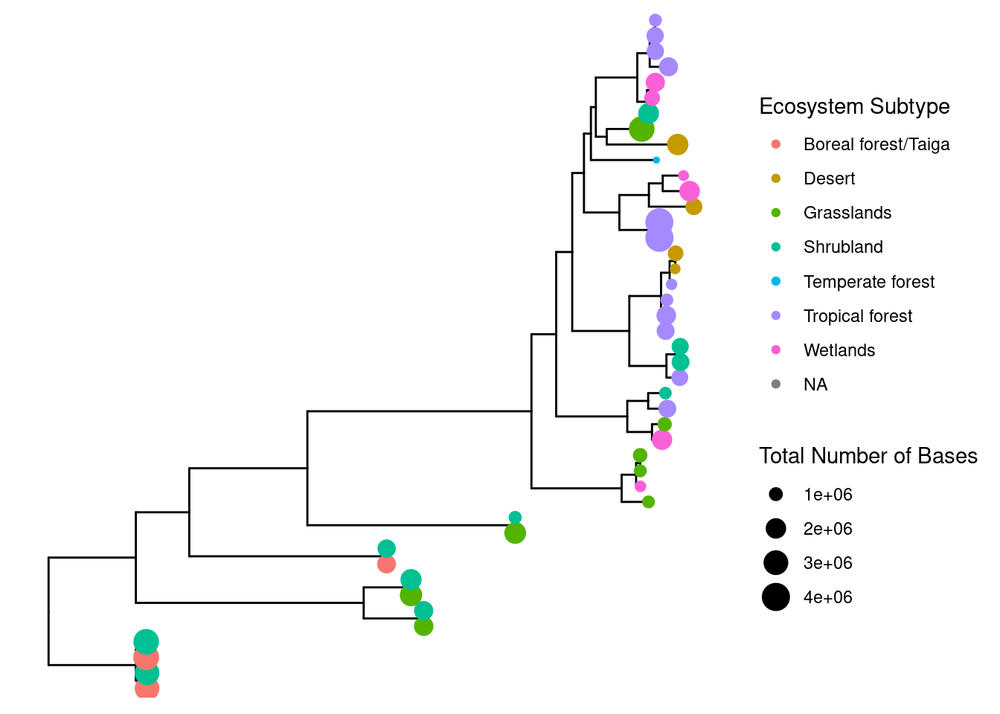
Figure 3.
Ecoystem Subtype and Corresponding Bin Completeness and Contamination
# For unknown reasons the following does not like blank spaces in the namesNEON_MAGs_metagenomes_chemistry_noblank <- NEON_MAGs_metagenomes_chemistry %>%rename("AssemblyType"="Assembly Type") %>%rename("BinCompleteness"="Bin Completeness") %>%rename("BinContamination"="Bin Contamination") %>%rename("TotalNumberofBases"="Total Number of Bases") %>%rename("EcosystemSubtype"="Ecosystem Subtype")ggtree(tree_arc) %<+% NEON_MAGs_metagenomes_chemistry +geom_tippoint(aes(colour=`Ecosystem Subtype`)) +# For unknown reasons the following does not like blank spaces in the namesgeom_facet(panel ="Bin Completeness", data = NEON_MAGs_metagenomes_chemistry_noblank, geom = geom_point, mapping=aes(x = BinCompleteness)) +geom_facet(panel ="Bin Contamination", data = NEON_MAGs_metagenomes_chemistry_noblank, geom = geom_col, aes(x = BinContamination), orientation ='y', width = .6) +theme_tree2(legend.position=c(.1, .7))
ggtree(tree_arc, layout="circular") %<+% NEON_MAGs_metagenomes_chemistry +geom_point2(mapping=aes(color=`Ecosystem Subtype`, size=`Total Number of Bases`))
Warning: Removed 43 rows containing missing values or values outside the scale range
(`geom_point_g_gtree()`).
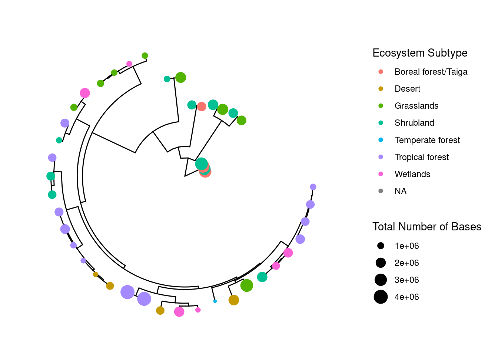
Figure 7.
Phylogenetic Tree Displaying Ecosystem Subtypes and Corresponding Assembly Type and Total Number of Bases for Archaea
ggtree(tree_arc, layout="circular", branch.length="none") %<+% NEON_MAGs_metagenomes_chemistry +geom_point2(mapping=aes(color=`Ecosystem Subtype`, size=`Total Number of Bases`)) +new_scale_fill() +geom_fruit(data=NEON_MAGs_metagenomes_chemistry_noblank,geom=geom_tile,mapping=aes(y=label, x=1, fill= AssemblyType),offset=0.08, # The distance between external layers, default is 0.03 times of x range of tree.pwidth=0.25# width of the external layer, default is 0.2 times of x range of tree. )
! The following column names/name: Site.x, Sample Name, Site ID.x, Subplot.x, Layer.x, Date.x, IMG Genome ID.x, Bin Quality, Bin Lineage, GTDB-Tk Taxonomy Lineage, Domain.x, Phylum, Class, Order, Family, Genus, 5s rRNA, 16s rRNA, 23s rRNA, tRNA Genes, Gene Count, Scaffold Count, taxon_oid, Domain.y, Sequencing Status, Study Name, Site.y, Site ID.y, Subplot.y, Layer.y, Date.y, Sequencing Center, IMG Genome ID.y, GOLD Study ID, Ecosystem, Ecosystem Category, Ecosystem Type, Specific Ecosystem, Altitude In Meters, Chlorophyll Concentration, Depth In Meters, Elevation In Meters, Geographic Location, Habitat, Isolation, Isolation Country, Latitude, Longhurst Code, Longhurst Description, Longitude, Nitrate Concentration, Oxygen Concentration, pH, Pressure, Salinity, Salinity Concentration, Sample Collection Date, Sample Collection Temperature, Subsurface In Meters, Genome Size * assembled, Gene Count * assembled, Scaffold Count * assembled, Genome MetaBAT Bin Count * assembled, Genome EukCC Bin Count * assembled, CRISPR Count * assembled, GC Count * assembled, GC * assembled, Coding Base Count * assembled, Coding Base Count % * assembled, CDS Count * assembled, CDS % * assembled, siteID, plotID, nlcdClass, decimalLatitude, decimalLongitude, elevation, collectionDate, horizon, soilTemp, d15N, organicd13C, nitrogenPercent, organicCPercent, CNratio, soilInWaterpH, soilInCaClpH are/is the same to tree data, the tree data column names are : label, y, angle, Site.x, Sample Name, Site ID.x, Subplot.x, Layer.x, Date.x, IMG Genome ID.x, Bin Quality, Bin Lineage, GTDB-Tk Taxonomy Lineage, Domain.x, Phylum, Class, Order, Family, Genus, Bin Completeness, Bin Contamination, Total Number of Bases, 5s rRNA, 16s rRNA, 23s rRNA, tRNA Genes, Gene Count, Scaffold Count, Assembly Type, taxon_oid, Domain.y, Sequencing Status, Study Name, Site.y, Site ID.y, Subplot.y, Layer.y, Date.y, Sequencing Center, IMG Genome ID.y, GOLD Study ID, Ecosystem, Ecosystem Category, Ecosystem Subtype, Ecosystem Type, Specific Ecosystem, Altitude In Meters, Chlorophyll Concentration, Depth In Meters, Elevation In Meters, Geographic Location, Habitat, Isolation, Isolation Country, Latitude, Longhurst Code, Longhurst Description, Longitude, Nitrate Concentration, Oxygen Concentration, pH, Pressure, Salinity, Salinity Concentration, Sample Collection Date, Sample Collection Temperature, Subsurface In Meters, Genome Size * assembled, Gene Count * assembled, Scaffold Count * assembled, Genome MetaBAT Bin Count * assembled, Genome EukCC Bin Count * assembled, CRISPR Count * assembled, GC Count * assembled, GC * assembled, Coding Base Count * assembled, Coding Base Count % * assembled, CDS Count * assembled, CDS % * assembled, siteID, plotID, nlcdClass, decimalLatitude, decimalLongitude, elevation, collectionDate, horizon, soilTemp, d15N, organicd13C, nitrogenPercent, organicCPercent, CNratio, soilInWaterpH, soilInCaClpH.
Warning: Removed 43 rows containing missing values or values outside the scale range
(`geom_point_g_gtree()`).
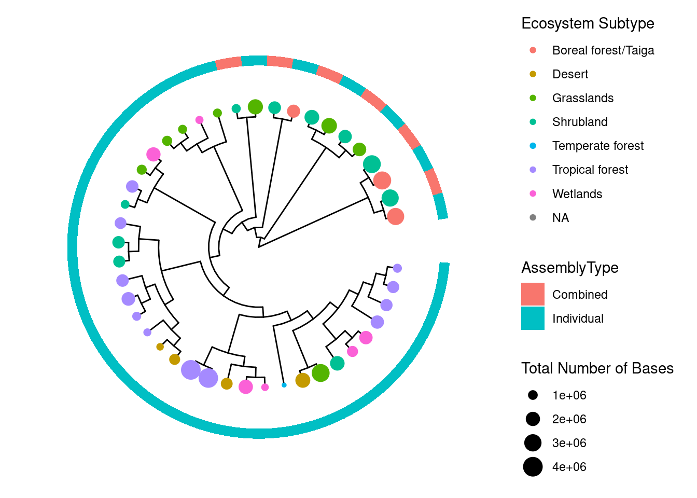
Figure 8.
Phylogenetic Tree Displaying Ecosystem Subtypes and Corresponding Assembly Type and Total Number of Bases For Archaea w/ Bars
ggtree(tree_arc, layout="circular", branch.length="none") %<+% NEON_MAGs_metagenomes_chemistry +geom_point2(mapping=aes(color=`Ecosystem Subtype`, size=`Total Number of Bases`)) +new_scale_fill() +geom_fruit(data=NEON_MAGs_metagenomes_chemistry_noblank,geom=geom_tile,mapping=aes(y=label, x=1, fill= AssemblyType),offset=0.08, # The distance between external layers, default is 0.03 times of x range of tree.pwidth=0.25# width of the external layer, default is 0.2 times of x range of tree. ) +new_scale_fill() +geom_fruit(data=NEON_MAGs_metagenomes_chemistry_noblank,geom=geom_col,mapping=aes(y=label, x=TotalNumberofBases), pwidth=0.4,axis.params=list(axis="x", # add axis text of the layer.text.angle=-45, # the text size of axis.hjust=0# adjust the horizontal position of text of axis. ),grid.params=list() # add the grid line of the external bar plot. ) +theme(#legend.position=c(0.96, 0.5), # the position of legend.legend.background=element_rect(fill=NA), # the background of legend.legend.title=element_text(size=7), # the title size of legend.legend.text=element_text(size=6), # the text size of legend.legend.spacing.y =unit(0.02, "cm") # the distance of legends (y orientation). )
! The following column names/name: Site.x, Sample Name, Site ID.x, Subplot.x, Layer.x, Date.x, IMG Genome ID.x, Bin Quality, Bin Lineage, GTDB-Tk Taxonomy Lineage, Domain.x, Phylum, Class, Order, Family, Genus, 5s rRNA, 16s rRNA, 23s rRNA, tRNA Genes, Gene Count, Scaffold Count, taxon_oid, Domain.y, Sequencing Status, Study Name, Site.y, Site ID.y, Subplot.y, Layer.y, Date.y, Sequencing Center, IMG Genome ID.y, GOLD Study ID, Ecosystem, Ecosystem Category, Ecosystem Type, Specific Ecosystem, Altitude In Meters, Chlorophyll Concentration, Depth In Meters, Elevation In Meters, Geographic Location, Habitat, Isolation, Isolation Country, Latitude, Longhurst Code, Longhurst Description, Longitude, Nitrate Concentration, Oxygen Concentration, pH, Pressure, Salinity, Salinity Concentration, Sample Collection Date, Sample Collection Temperature, Subsurface In Meters, Genome Size * assembled, Gene Count * assembled, Scaffold Count * assembled, Genome MetaBAT Bin Count * assembled, Genome EukCC Bin Count * assembled, CRISPR Count * assembled, GC Count * assembled, GC * assembled, Coding Base Count * assembled, Coding Base Count % * assembled, CDS Count * assembled, CDS % * assembled, siteID, plotID, nlcdClass, decimalLatitude, decimalLongitude, elevation, collectionDate, horizon, soilTemp, d15N, organicd13C, nitrogenPercent, organicCPercent, CNratio, soilInWaterpH, soilInCaClpH are/is the same to tree data, the tree data column names are : label, y, angle, Site.x, Sample Name, Site ID.x, Subplot.x, Layer.x, Date.x, IMG Genome ID.x, Bin Quality, Bin Lineage, GTDB-Tk Taxonomy Lineage, Domain.x, Phylum, Class, Order, Family, Genus, Bin Completeness, Bin Contamination, Total Number of Bases, 5s rRNA, 16s rRNA, 23s rRNA, tRNA Genes, Gene Count, Scaffold Count, Assembly Type, taxon_oid, Domain.y, Sequencing Status, Study Name, Site.y, Site ID.y, Subplot.y, Layer.y, Date.y, Sequencing Center, IMG Genome ID.y, GOLD Study ID, Ecosystem, Ecosystem Category, Ecosystem Subtype, Ecosystem Type, Specific Ecosystem, Altitude In Meters, Chlorophyll Concentration, Depth In Meters, Elevation In Meters, Geographic Location, Habitat, Isolation, Isolation Country, Latitude, Longhurst Code, Longhurst Description, Longitude, Nitrate Concentration, Oxygen Concentration, pH, Pressure, Salinity, Salinity Concentration, Sample Collection Date, Sample Collection Temperature, Subsurface In Meters, Genome Size * assembled, Gene Count * assembled, Scaffold Count * assembled, Genome MetaBAT Bin Count * assembled, Genome EukCC Bin Count * assembled, CRISPR Count * assembled, GC Count * assembled, GC * assembled, Coding Base Count * assembled, Coding Base Count % * assembled, CDS Count * assembled, CDS % * assembled, siteID, plotID, nlcdClass, decimalLatitude, decimalLongitude, elevation, collectionDate, horizon, soilTemp, d15N, organicd13C, nitrogenPercent, organicCPercent, CNratio, soilInWaterpH, soilInCaClpH.
! The following column names/name: Site.x, Sample Name, Site ID.x, Subplot.x, Layer.x, Date.x, IMG Genome ID.x, Bin Quality, Bin Lineage, GTDB-Tk Taxonomy Lineage, Domain.x, Phylum, Class, Order, Family, Genus, 5s rRNA, 16s rRNA, 23s rRNA, tRNA Genes, Gene Count, Scaffold Count, taxon_oid, Domain.y, Sequencing Status, Study Name, Site.y, Site ID.y, Subplot.y, Layer.y, Date.y, Sequencing Center, IMG Genome ID.y, GOLD Study ID, Ecosystem, Ecosystem Category, Ecosystem Type, Specific Ecosystem, Altitude In Meters, Chlorophyll Concentration, Depth In Meters, Elevation In Meters, Geographic Location, Habitat, Isolation, Isolation Country, Latitude, Longhurst Code, Longhurst Description, Longitude, Nitrate Concentration, Oxygen Concentration, pH, Pressure, Salinity, Salinity Concentration, Sample Collection Date, Sample Collection Temperature, Subsurface In Meters, Genome Size * assembled, Gene Count * assembled, Scaffold Count * assembled, Genome MetaBAT Bin Count * assembled, Genome EukCC Bin Count * assembled, CRISPR Count * assembled, GC Count * assembled, GC * assembled, Coding Base Count * assembled, Coding Base Count % * assembled, CDS Count * assembled, CDS % * assembled, siteID, plotID, nlcdClass, decimalLatitude, decimalLongitude, elevation, collectionDate, horizon, soilTemp, d15N, organicd13C, nitrogenPercent, organicCPercent, CNratio, soilInWaterpH, soilInCaClpH are/is the same to tree data, the tree data column names are : label, y, angle, Site.x, Sample Name, Site ID.x, Subplot.x, Layer.x, Date.x, IMG Genome ID.x, Bin Quality, Bin Lineage, GTDB-Tk Taxonomy Lineage, Domain.x, Phylum, Class, Order, Family, Genus, Bin Completeness, Bin Contamination, Total Number of Bases, 5s rRNA, 16s rRNA, 23s rRNA, tRNA Genes, Gene Count, Scaffold Count, Assembly Type, taxon_oid, Domain.y, Sequencing Status, Study Name, Site.y, Site ID.y, Subplot.y, Layer.y, Date.y, Sequencing Center, IMG Genome ID.y, GOLD Study ID, Ecosystem, Ecosystem Category, Ecosystem Subtype, Ecosystem Type, Specific Ecosystem, Altitude In Meters, Chlorophyll Concentration, Depth In Meters, Elevation In Meters, Geographic Location, Habitat, Isolation, Isolation Country, Latitude, Longhurst Code, Longhurst Description, Longitude, Nitrate Concentration, Oxygen Concentration, pH, Pressure, Salinity, Salinity Concentration, Sample Collection Date, Sample Collection Temperature, Subsurface In Meters, Genome Size * assembled, Gene Count * assembled, Scaffold Count * assembled, Genome MetaBAT Bin Count * assembled, Genome EukCC Bin Count * assembled, CRISPR Count * assembled, GC Count * assembled, GC * assembled, Coding Base Count * assembled, Coding Base Count % * assembled, CDS Count * assembled, CDS % * assembled, siteID, plotID, nlcdClass, decimalLatitude, decimalLongitude, elevation, collectionDate, horizon, soilTemp, d15N, organicd13C, nitrogenPercent, organicCPercent, CNratio, soilInWaterpH, soilInCaClpH, xmaxtmp.
Warning: Removed 43 rows containing missing values or values outside the scale range
(`geom_point_g_gtree()`).
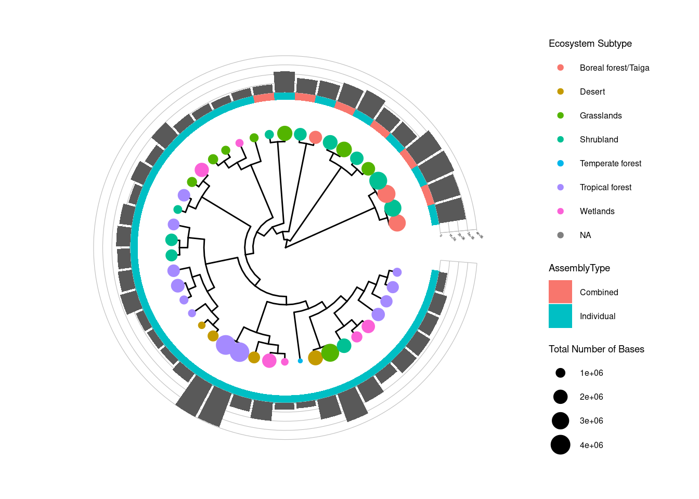
#Figure 9. ## Bin Quality vs. Bin Completeness in NEO MAGs Database
NEON_MAGs %>%ggplot(aes(x =`Bin Quality`, y =`Bin Completeness`, color ='Red')) +geom_point() +labs(x ="Bin Quality", y ="Bin Completeness", title ="Bin Quality Vs. Bin Completeness")
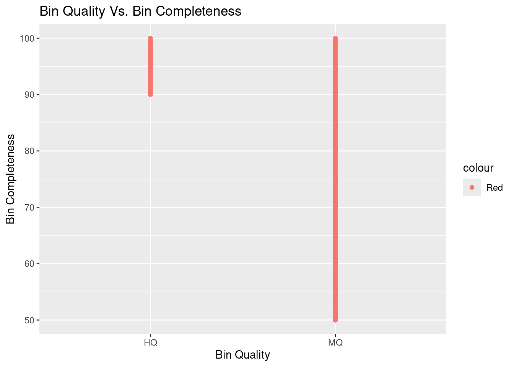
#Figure 10. ## Total Number of Bases vs. Bin Completeness
NEON_MAGs %>%ggplot(aes(x =`Total Number of Bases`, y =`Bin Completeness`)) +geom_point() +labs(x ="Total Number of Bases", y ="Bin Completeness", title ="Total Number of Bases Vs. Bin Completeness")
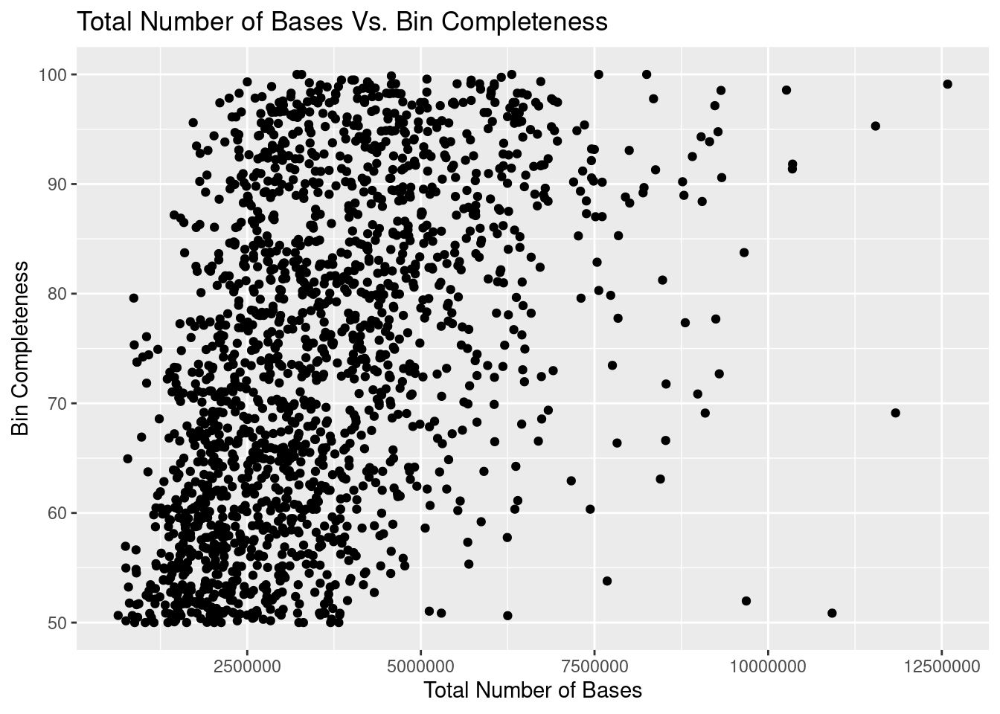
#Figure 11. ## Bin Completeness and Total Number of Bases at Each Tippoint
tree_arc <-read.tree("data/NEON/gtdbtk.ar53.decorated.tree")ggtree(tree_arc, layout="circular") %<+% NEON_MAGs +geom_point2(mapping=aes(color=`Bin Completeness`, size=`Total Number of Bases`))
Warning: Removed 43 rows containing missing values or values outside the scale range
(`geom_point_g_gtree()`).
Rows: 176 Columns: 46
── Column specification ────────────────────────────────────────────────────────
Delimiter: "\t"
chr (18): Domain, Sequencing Status, Study Name, Genome Name / Sample Name, ...
dbl (16): taxon_oid, IMG Genome ID, Depth In Meters, Elevation In Meters, Ge...
lgl (12): Altitude In Meters, Chlorophyll Concentration, Longhurst Code, Lon...
ℹ Use `spec()` to retrieve the full column specification for this data.
ℹ Specify the column types or set `show_col_types = FALSE` to quiet this message.
#Figure 16. ## Bin Completeness and Total Number of Bases at Tip point
ggtree(tree_Archaea, layout="circular") %<+% NEON_MAGs_metagenomes_chemistry +geom_point2(mapping=aes(color=`Bin Completeness`, size=`Total Number of Bases`))
Warning: Removed 33 rows containing missing values or values outside the scale range
(`geom_point_g_gtree()`).
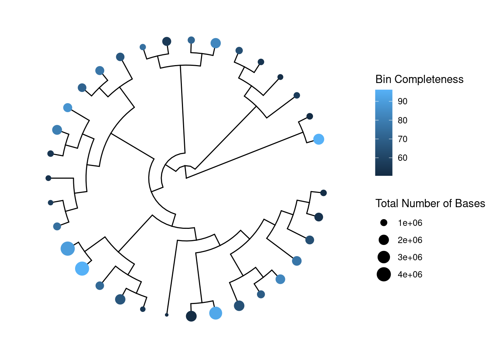
#Figure 17.
Phlyum Counts at Santa Rita Experimental Range
NEON_MAGs_SRER %>%ggplot(aes(y=Phylum))+geom_bar()+labs(title ="Phylum Counts at Santa Rita Experimental Range")
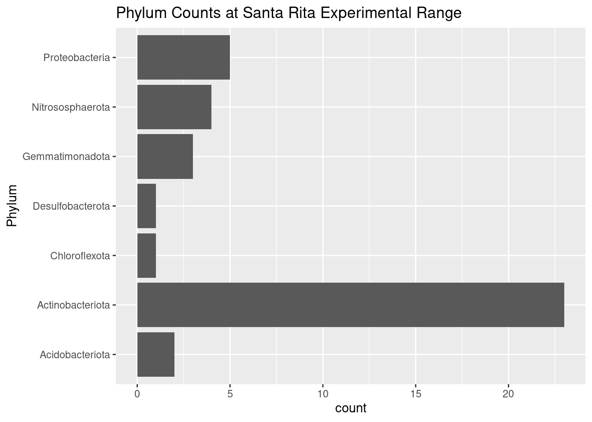
Figure 18.
Phylum Size at Santa Rita Experimental Range
NEON_MAGs_SRER %>%ggplot(aes(x =`Total Number of Bases`, y =`Phylum`)) +geom_point()+labs(title ="Phylum Size at Santa Rita Experimental Range")
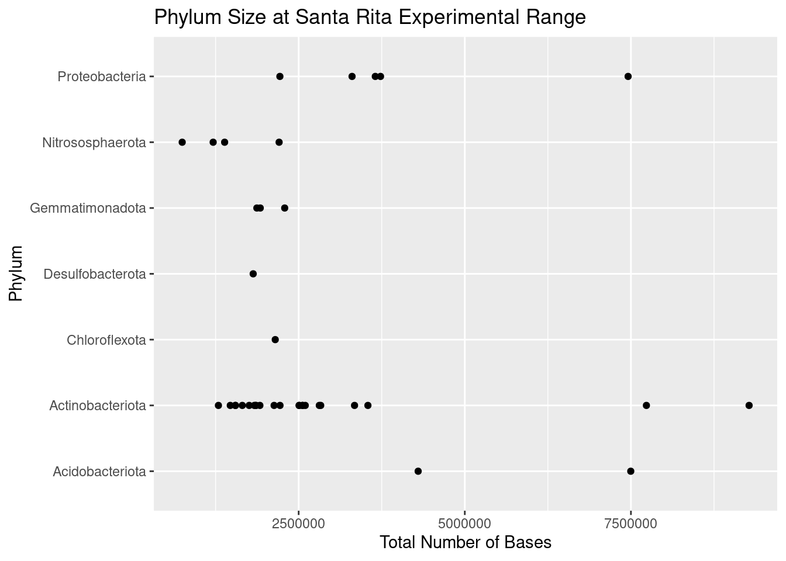
Figure 19.
Phylum Counts at Santa Rita Experimental Range
ggplotly(ggplot(data = NEON_MAGs_SRER, aes(x =`Gene Count`, y =`Scaffold Count`)) +geom_point(aes(color = Phylum, shape = Phylum))+labs(title ="Phylum Counts at Santa Rita Experimental Range") )
Warning: The shape palette can deal with a maximum of 6 discrete values because more
than 6 becomes difficult to discriminate
ℹ you have requested 7 values. Consider specifying shapes manually if you need
that many have them.
#Figure 20.
NEON_MAGs_metagenomes_chemistry_archaea %>%ggplot(aes(x=`Site ID.x`, y = soilTemp)) +geom_boxplot()
Warning: Removed 4 rows containing non-finite outside the scale range
(`stat_boxplot()`).
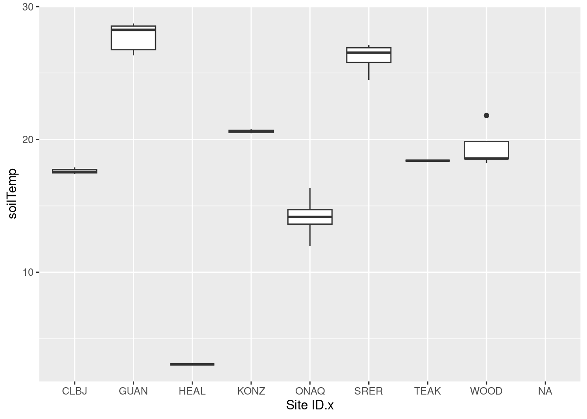
Figure 21.
Order vs. Ecosystem Subtype and Soil Temp
NEON_MAGs_metagenomes_chemistry_archaea %>%ggplot(aes(x=`Ecosystem Subtype`, y = soilTemp, color = Order)) +geom_point() +theme(axis.text.x =element_text(angle=45, vjust=1, hjust=1))
Warning: Removed 4 rows containing missing values or values outside the scale range
(`geom_point()`).
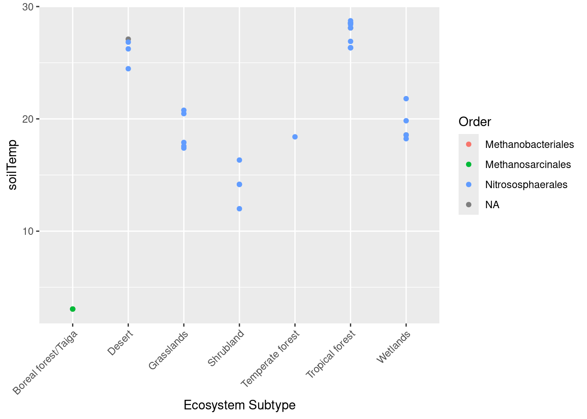
#Figure 22. # Organic Percentage vs. Nitrogen Percentage by Phylum
ggplotly(ggplot(data= NEON_full ,aes(x = organicCPercent, y = nitrogenPercent)) +geom_point(aes(color= Phylum)))